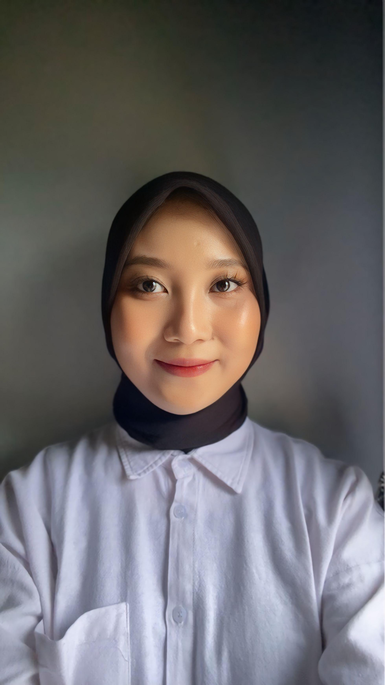
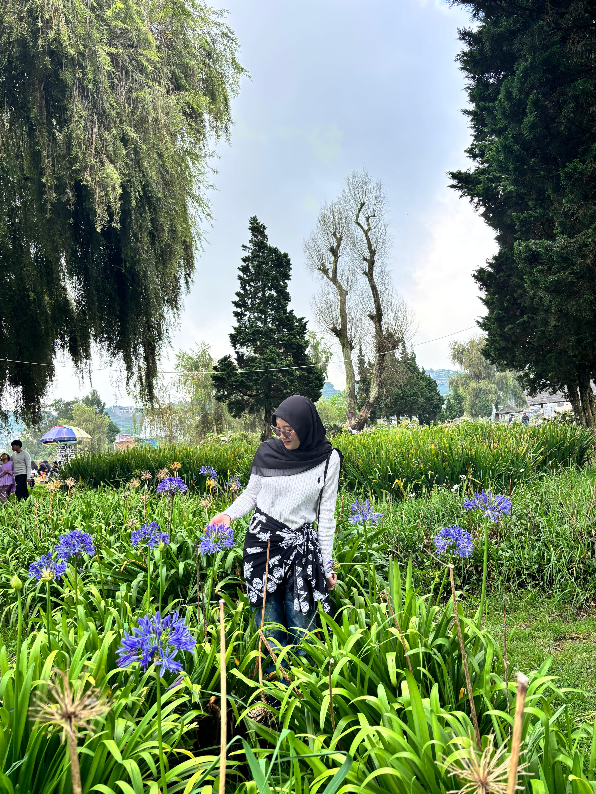
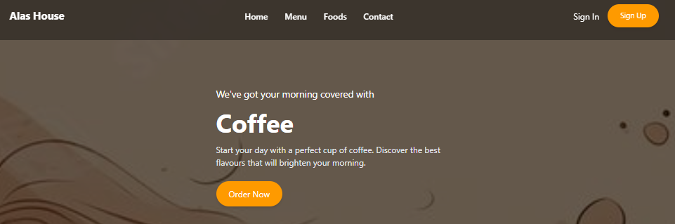
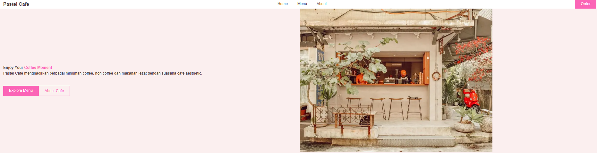
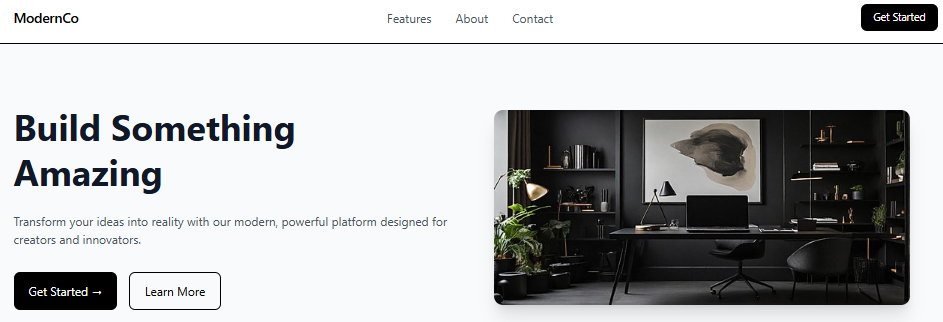

Frontend Developer with a tester's mindset building interfaces that work flawlessly

I'm an Information Systems graduate with professional experience in Software Quality Assurance and a growing focus on Frontend Development. My background in software testing helps me build web interfaces that are not only visually structured but also reliable and user-focused. I enjoy transforming ideas into responsive and functional web applications while applying analytical thinking and strong attention to detail. Currently, I'm expanding my skills in modern frontend technologies such as HTML, CSS, JavaScript, React, and responsive web design.
Email: anggitnila@gmail.com
Nationality: Indonesia
Location: Jakarta Timur
Degree: S1 Information Systems
Years Experience
Projects
Clients
Worked on building responsive web interfaces using HTML, CSS and JavaScript.
Executed functional and UAT testing for banking web modules, designed test cases, and collaborated with developers to ensure reliable system releases.
Created structured test cases, performed API testing using Postman, and managed bug documentation throughout the testing lifecycle.
Processed datasets using Python and SQL, performed data cleaning and visualization to generate analytical insights.
Building structured web pages.
Responsive layout and styling.
Adding interaction to websites.
Version control and collaboration.
Testing Web and mobile with agile methode.
Create Test Scenario 1000+ per user strory.

Frontend project built using HTML, CSS and JavaScript as part of bootcamp exercises.

Responsive website project developed using HTML, CSS and Tailwind.

Interactive web interface project built with JavaScript and responsive layout techniques.
I'm currently open to frontend development opportunities, collaborations, or interesting tech discussions. If you'd like to work together or simply say Hello, feel free to reach out.